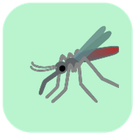

BiteWindowPrivacy Policy
Effective date: October 19, 2026
BiteWindow provides experimental mosquito activity estimates, weather information, prevention guidance, and an optional community reporting feature. This policy describes data handling in the current release. Public community submissions are disabled.
Contact
For privacy questions or requests concerning information submitted to BiteWindow, email bitewindow.privacy@gmail.com.
Current release note: Public community submissions are not yet enabled on the BiteWindow website. Local reports and exports remain available.
1. Weather forecasts and location
You can search for a city or choose to allow your device to provide a location. If you permit location access, BiteWindow receives coordinates in your browser to request relevant weather data. A city search uses a geocoding service to obtain coordinates. BiteWindow sends coordinates and weather-related requests to Open-Meteo services to display local forecasts and calculate an experimental mosquito activity score. Your browser may also transmit technical connection information, such as your IP address, to those services.
BiteWindow does not require access to your device's location; you may search for a city instead. Browser location permission can be changed in your device or browser settings.
For locations in the United States, coordinates are sent to the FCC Census API to identify the county and state. For a new device location obtained after you press Locate and grant permission, coordinates are also sent directly to BigDataCloud's free client-side reverse-geocoding service to identify the country and administrative region. BigDataCloud receives your IP address with the coordinates and describes using aggregated GPS-to-IP signals to improve its geolocation data. See BigDataCloud's privacy policy. The app does not send searched city coordinates to BigDataCloud and does not use an IP-location fallback. The selected coordinates remain in browser memory for weather refreshes; the app does not write precise GPS coordinates to local storage.
2. Information saved on your device
BiteWindow stores user-created outing reports in your browser's local storage. These reports may include the date and time you record a report, approximate geographic grid, selected place name, weather readings, exposure duration, bite count, prevention settings, and the app's modeled score. The disabled community-submission code does not create a contributor identifier in this release. An identifier from an earlier release may remain in your browser storage. Export downloads a copy of the local reports and does not delete the originals. Reports remain until you clear them or your browser removes its storage. The app does not upload local reports automatically.
You can remove locally saved data using your browser's site-data controls. Clearing app data may also remove reports or preferences you have not exported.
3. Community submissions
Public community submissions are disabled. This release does not send local reports or contributor identifiers to a community API, retrieve community totals, or load Cloudflare Turnstile verification. Saving an outing and exporting reports work locally.
4. Public-health surveillance information
The app downloads public surveillance snapshots hosted with the website. A scheduled build retrieves official Florida weekly reports and CDC dengue county data; these public snapshots do not contain your app reports or selected coordinates. The Alerts screen filters the snapshots in your browser using the selected jurisdiction. It shows the official reporting period, source dates when available, and app refresh time separately. Official sources may be delayed, incomplete, unavailable, or cover only some diseases. Opening an official source link shares ordinary connection information with that provider.
5. Retention and deletion
Locally saved reports stay in your browser until you clear site data or your browser removes its storage. The app also caches its public interface, artwork, and public surveillance snapshots for offline use. It does not cache weather-provider responses or reverse-geocoding responses in persistent app storage. You can remove the app's stored reports and caches using your browser's site-data controls. Export any reports you want to retain first.
No public community-report retention or deletion service is active in this release. Contact bitewindow.privacy@gmail.com with privacy questions. Do not send precise GPS coordinates or sensitive report histories by email.
6. Service providers
- GitHub Pages: hosts the BiteWindow website and related static files.
- Open-Meteo: provides geocoding and weather forecast data requested by the app.
- FCC Census API: resolves United States coordinates to county and state.
- BigDataCloud: resolves a fresh, consented device location to administrative regions.
- Florida Department of Health and CDC: supply the public surveillance sources used by the build and linked by Alerts.
- Cloudflare: the community API and Turnstile are not contacted by the disabled community feature in this release.
These providers may handle technical usage data under their own applicable policies. BiteWindow does not include an advertising tracker in this release.
7. Sharing and public feature requests
If you use your device's sharing controls, you decide which app or recipient receives the shared BiteWindow link. Clicking “Review request on GitHub” sends your entered feature title and details to GitHub in the URL used to open its issue-creation page, even if you do not publish the issue. You review and submit the issue on GitHub; published issues may be publicly visible. Do not enter private contact details or exact location histories in the feature-request form.
8. Children
BiteWindow is intended for general informational use and is not designed to collect community reports from children. Do not submit information about a child. Any children-specific collection or account functionality would require a separate review before release.
9. Changes
We may update this policy as BiteWindow's features and data practices change. The effective date at the top of this page will indicate the latest published revision. Material changes will be reflected here before affected features are enabled.
10. Mosquito and health information
BiteWindow's weather-based mosquito activity estimates and prevention guidance are informational. They do not establish a person's actual chance of being bitten and do not provide medical diagnosis or individualized medical advice. Official public-health agencies are the appropriate source for local disease advisories.